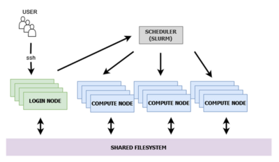
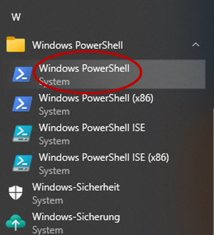

Simple SNP detection workflow#
This example, for HPC beginners, describes each step of an SNP detection analysis based on DNA sequencing data on an HPC system. We do not guarantee correctness.
Content#
Dataset
HPC Infrastructure
Workflow steps
Login to cluster
Create a workspace
Create environment and install required modules
Copy data to the HPC filesystem
Conduct analysis
Copy results to local computer
1. Dataset#
Detailed information regarding the dataset and experimental design: Key et al. (2023) On-person adaptive evolution of Staphylococcus aureus during treatment for Atopic Dermatitis (Cell & Microbe).
As raw data, to be analyzed, five Staphylococcus aureus samples of this publication and
the S. aureus reference genome ASM1342v1
were downloaded.
Accession numbers of the five samples: SRR13995561, SRR13995562, SRR13995563, SRR13995564, SRR13995565.
For your convenience the data with the five accessions and the reference genome
ASM1342v1 are available to download
at a ZIH Datashare repository.
In case you would like to practice downloading data from NCBI, follow the instructions
of the SRA Toolkit installation
how to configure
and how to download the fastq files using the SRA Toolkit.
It is also possible to download the data directly to the cluster filesystem.
In this case you can skip the data transfer part.
Download the data#
Using the SRA Toolkit, you can download the accessions, the raw data,
which you would like to analyze.
There are SRA Toolkit versions available for Linux and Windows systems.
The following example downloads the accession number SRR13995561 using
a Windows or Linux OS, respectively.
=== “Windows”
```powershell
# downloading accession number SRR13995561 to the 'sratoolkit \bin' folder:
marie@local$ fastq-dump SRR13995561
# downloading directly the fastq files and saving it in folder named "fastqfiles":
PS C:\marie@local\path\to\sratoolkit.current-win64\sratoolkit.3.0.7-win64\bin$ .\fasterq-dump SRR13995561
--outdir fastqfiles --outfile SRR13995561.fastq
```
=== “Linux”
```bash
# downloading accession number SRR13995561 to the 'sratoolkit /bin' folder:
marie@local$ fastq-dump SRR13995561
# specify the directory with
marie@local$ ~/path/to/sratoolkit/bin/fasterq-dump SRR13995561 --outdir /path/to/folder/fastqfiles --outfile SRR13995561.fastq
```
2. HPC infrastructure#
The filesystem can communicate with each cluster, login and compute node. Access to the compute node is possible via the login nodes. Slurm is a workload manager who facilitates the allocation of the requested resources for each job. The HPC system at TUD consists of five clusters with the basic structure as shown below. With the exception that they share one filesystem.

Directories within the filesystem differ in capacity, duration and functionality#
There are two types of filesystems: permanent and working. Permanent filesystems do not expire, and regular backups are generated. Working filesystems are accessible via workspaces, and have an expiry date. They are designed for data computation, data processing, hence a working filesystem.
/home
permanent
limited in size
backups are taken from here, frequent changes are a bad idea
not a working directory
working filesystem
no backups
depending on your project use the different systems, e.g.
/horse,/walrus
/projects
for the duration of the applied project
backups are generated
capacity according to the application
folders within can be shared with other members of the project
mounted read-only, not for temporary data on the compute nodes - not a working directory
pre-installed software can be found here
1-2 per year, admins install new software in different release folders. Software and their versions will differ among the releases. The compendium describes how to find the available software.
3. Workflow steps#
Considering the infrastructure of the HPC system and assuming the fastq files including reference
genome are saved on the local computer, the following steps are necessary:
Access the HPC system via login node
Create a workspace
Create a virtual environment and install required software
Copy data to the created workspace
Conduct analysis
Copy results to local computer
4. Login to cluster with windows#
Follow the different steps to login to the HPC system using Windows PowerShell.
Open Windows PowerShell:

Using the program PowerShell to establish the ssh connection.
The example shows how to connect to the login node 2 of the barnard cluster.
marie@local$ ssh marie@login2.barnard.hpc.tu-dresden.de
When logging in for the first time, the following question will occur:
The authenticity of host 'login2.barnard.hpc.tu-dresden.de (172.24.95.29)'
cant't be established. ECDSA key fingerprint is SHA256:Xan2MYazewT0V5agNazaQfWzLKBD3P48zRwR6reoXhI.
Are you sure you want to continue connecting (yes/no/[fingerprint])?
Compare the keys and, only if correct, continue. Enter your password.
!!! Important “”
Note that the password will not be visible while typing
With the successful login, you will receive some basic information:
Last login: Mon Aug11 11:11:11 2025 from 141.00.000.00
-----------------------------------------------------------------------
# nodes: 720 (714 available / 6 unavailable)
-----------------------------------------------------------------------
jobs running: 1010 | cores in use: 90398
jobs pending: 52 | cores unavailable: 936
jobs suspend: 0 |
jobs damaged: 35 |
-----------------------------------------------------------------------
CORES
free | resv | down | total
------+-------+-------+-------
28641 | 208 | 936 | 74880
------+-------+-------+-------
-----------------------------------------------------------------------
??? info “Linux login”
In case you are using a Linux operation system. Open your terminal
and conduct the same steps as within the PowerShell to connect.
5. Create a workspace#
Creating a workspace with a specific expiration date. The workspace is the optimal location for your data while conducting the analysis. But it is not for storing data. It is possible to have more than one workspace in the selected filesystem.
Create a workspace named example_SNPs and a validity of 60 days.
[marie@login.barnard ~] $ ws_allocate -r 7 -m marie@tu-dresden.de example_SNPs -d 60
Info:creating workspace.
/data/horse/ws/marie-example_SNPs
Remaining extensions: 10
Remaining time in days:60
Parameters:
as we did not specify the filesystem, the workspace will be generated in the default system
/data/horse.-r: determine the time, in days, that the reminder about the expiry date is sent. In this example 7 days.
-m: email address the reminder will be send to
workspace name (in this case
example_SNPs)-d: duration of the workspace in days, here 60 days
It is possible to have more than one workspace within a given filesystem.
Change the directory to the generated workspace:
[marie@login.barnard ~] $ cd /data/horse/ws/marie-example_SNPs
[marie@login.barnard marie-example_SNPs]$
# instead of '~' (=home directory), the current directory is now marie-example_SNPs. You may check the complete path with
[marie@login.barnard marie-example_SNPs]$ pwd
/data/horse/ws/marie-example_SNPs
6. Create environment and install required modules#
We create a virtual environment, where the required modules can be installed to avoid problems due to incompatibilities of different software versions and/or overloading the user space with software which is unnecessary for a particular analysis, but would slow down working in the user space.
The (name) in front of the directory is the current environment you are in.
It is possible to create virtual environments in either the /home directory or in
the created workspace.
For the latter case, the virtual environment will be deleted with the workspace at
the defined expiration date.
The /home directory is limited in size and virtual environments can become large.
Therefore, we recommend to create environments in your workspace.
Independent from the directory, we recommend to save all
steps in a .yml file and save it in the /home directory.
So at a later point you are able to
recreate the environment.
In general, we recommend to use ‘pip’ as a package manager, but some modules require
different managers like ‘conda’ or ‘mamba’.
Here, we will use ‘mamba’ and, therefore, we will first install Mamba in the /home directory using
Miniforge3. Mamba is a package manager similar to conda but
faster and better in solving dependencies.
[marie@login.barnard ~] $ curl -L -O "https://github.com/conda-forge/miniforge/releases/latest/download/Miniforge3-$(uname)-$(uname -m).sh"
[marie@login.barnard ~] $ bash Miniforge3-$(uname)-$(uname -m).sh
After the successful installation, you will receive the following confirmation.
Miniforge3 will now be installed into this location:
/home/marie/miniforge3
- Press ENTER to confirm the location
- Press CTRL-C to abort the intallation
- Or specify a different location below
[/home/marie/miniforge3] >>>
We will now create, using Mamba, the environment SNP_detection
in the folder /env in your workspace example_SNPs.
Immediately with the creation the software bowtie2 including all
dependencies like python are installed within the environment.
You will find the created environments in the following directory /home/marie/miniforge3/envs/
[marie@login ~]$ mamba create --prefix /data/horse/ws/marie-example_SNPs/env/SNP_detection -c conda-forge -c bioconda bowtie2
To use the environment, it is necessary to activate it.
After the activation, in front of the directory, you can now see SNP_detection.
[marie@login ~]$ mamba activate /data/horse/ws/marie-example_SNPs/env/SNP_detection
(SNP_detection)[marie@login ~]$
# to deactivate the environment:
(SNP_detection)[marie@login ~]$ mamba deactivate
We will additionally install the modules samtools and bcftools in the virtual environment:
[marie@login marie-example_SNPs]$ mamba activate /data/horse/ws/marie-example_SNPs/env/SNP_detection
**(SNP_detection)**[marie@login marie-example_SNPs]$
(SNP_detection)[marie@login marie-example_SNPs]$ mamba install -c bioconda samtools
(SNP_detection)[marie@login marie-example_SNPs]$ mamba install -c bioconda bcftools
# display installed packages:
(SNP_detection)[marie@login marie-example_SNPs]$ mamba list
7. Copy data to the HPC filesystem#
Instead of ssh and the login nodes,
sftp or Dataport nodes are used to copy the data.
!!! Important “”
Note that the password will not be visible while typing.
The folder ‘staphylococcus_data’ contains the fastq files of the five accessions
and of the reference genome.
First we will zip the folder as it will increase the copying speed and
will provide you with an estimation of the transfer time.
=== “Windows”
```Powershell
# while not yet logged-in to the sftp server, change the directory where the folder
# staphylococcus_data is located and tar bundle the folder
marie@local$ cd .\Documents\path\to\folder\where\staphylococcus_data\is
marie@local$ tar czvf staphylococcus_data.tar.gz staphylococcus_data
# login to the dataport node
marie@local$ sftp marie@dataport1.hpc.tu-dresden.de
Password:
sftp>$
# using $pwd, the remote (cluster) directory will be displayed, using $lpwd
# the local directory you are currently in, will be displayed.
# Alternatively you may directly provide the complete path for both directories
# to copy the tar bundled folder 'staphylococcus_data.tar.gz' to our workspace example_SNPs.
# As we are working on a windows computer the first (local) directory requires backslashes and,
# in contrast, the cluster, a linux system, requires forward slashes to determine the directory.
sftp$ put -r .\Documents\path\to\folder\staphylococcus_data.tar.gz /data/horse/ws/marie-example_SNPs
# to log off the dataport node:
sftp$ exit
# example how to copy a fictional example.txt file to the workspace example_SNPs,
# as it differs to copying a complete folder.
marie@local$ sftp marie@dataport1.hpc.tu-dresden.de
Password:
sftp>$ put path\on\your\computer\to\file\example.txt /data/horse/ws/marie-example_SNPs
```
=== “Linux”
```Console
# change to the staphylococcus_data folder
marie@local$ cd Documents/path/to/staphylococcus_data/
# tar bundle folder
marie@local$ tar czvf staphylococcus_data.tar.gz staphylococcus_data
marie@local$ sftp marie@dataport1.hpc.tu-dresden.de
Password:
sftp>$
```
Now we access the workspace example_SNPs via one of the barnard login nodes
again and can unpack the data folder.
marie@local$ ssh marie@login2.barnard.hpc.tu-dresden.de
marie@login$ cd /data/horse/ws/marie-example_SNPs
marie@login$ tar -xzvf staphylococcus_data.tar.gz
8. Conduct analysis#
We are logged into barnard, in our workspace example_SNPs and have activated our
environment SNP_detection.
First step is to create the bowtie2 indices for the reference genome.
After that we create a new folder named bowtie_results for the results.
The intermediate results will be saved there.
This analysis is running now on the login nodes as only one sample with a small reference
genome is analyzed.
For more intensive analysis use the compute nodes.
(SNP_detection) [marie@login.barnard staphylococcus_data] $ bowtie2-build /data/horse/ws/marie-example_SNPs/staphylococcus_data/reference_staphylococcus_aureus.fna staphylo_index
$ mkdir bowtie_results
$ bowtie2 -t -p 4 -x bowtie_results/staphylo_index -1 SRR13995561_pass_1.fastq.gz -2 SRR13995561_pass_2.fastq.gz -S bowtie_results/SRR13995561.sam
Now we will use the modules samtools and bcftools we installed in the SNP_detection environment.
First it is required to generate indices for the reference genome, these are
different to the index which were previously build with the bowtie2 software
# generate index for reference genome
$ samtools faidx rg_staphylococcus_aureus.fna
In the next steps the .sam file will be converted to a .bam file, then sorted and indexed.
The resulting sorted .bam file will be used for the SNV calling step.
Afterwards, the intermediate result files can be deleted.
# the example is shown for the accession number SRR13995561
$ samtools view -b -S -o bowtie_results/SRR13995561.bam bowtie_results/SRR13995561.sam
$ samtools sort bowtie_results/SRR13995561.bam -o SRR13995561.sorted.bam
$ samtools index SRR13995561.sorted.bam
-b: output in
bamformat-S: in some
samtoolsversions necessary to detect the correct format of the input file insamformat-o: output file
The file SRR13995561.sorted.bam is used for the further analysis and is in the same directory
as the reference genome file.
The next step is the variant call for the sample using bcftools
$ bcftools mpileup -Ou -f rg_staphylococcus_aureus.fna SRR13995561.sorted.bam -o variants_SRR13995561.bcf
# create a readable vcf file
$ bcftools call -v -c variants_SRR13995561.bcf > variants_SRR13995561.vcf
mpileup:
-Ou: output type u -> uncompressed
bcffile-f: skip sites where FILTER column does not contain any of the strings listed in LIST call:
-v: variants only as output
-c: how to treat records with duplicate positions and defines compatible records
!!! Hint “Tip”
Typically, one would create pipe with the vcf file as a direct result. As the `.bcf` file is not
needed. For better comparability among the different jobs, this was not done here.
Combine all steps into a batch job file to be submitted on the HPC cluster#
Three examples are shown Example a) analysis of the one sample as above in one
batch job Example b) all five files analyzed sequentially in one batch job
Example c) all five files analyzed in parallel in one batch job.
The commands need to be saved in a .sh file.
Either create the .sh file while you are on the login node
and save it in staphylococcus folder or create the .sh file locally and upload it using the
sftp commands described above.
The .sh file can also be in your /home directory not in the temporary workspace,
as long as you specify within the script where the data is located and
you have activated the virtual environment with the required software.
You may also specify the directory of input and result files within the script.
# starting the job:
marie@login$ sbatch snp_calling_script.sh
??? Important “Hint”
With submitting a batch job, your analysis will run on a compute node.
The Slurm manager will allocate the resources according to your request.
!!! Warning “Attention:”
Pay attention to the environment activation.
Previously we have used `$ mamba activate SNP_detection`,
but within a batch job script, we have to define the source of the environment
with: `$ source activate /data/horse/ws/marie-example_SNPs/env/SNP_detection`
??? Note “Example a)”
```
#!/bin/bash
# Name of the job
#SBATCH -J "SNP_detection_staphylococcus_1_sample"
# maximum duration day-hour:minutes:seconds
#SBATCH --time=1:00:00
# out file(stdout) %J will be replaced by the job ID.
# You may replace 'outfile-' with an identifying name, e.g. 'staphylo_snps_out'
#SBATCH -o outfile-%J
# file for error messages (stderr)
# same as for the outfile, e.g. 'staphylo_snps_err'
#SBATCH -e errfile-%J
# request 4 cores
#SBATCH -n 4
# all cores are on one node
#SBATCH -N 1
## script:
# change directory to our data within the workspace
cd /data/horse/ws/marie-example_SNPs/staphylococcus_data
# activate the environment, we have to provide the directory of the environment
source activate /data/horse/ws/marie-example_SNPs/env/SNP_detection
# start of the analysis steps
bowtie2-build rg_staphylococcus_aureus.fna staphylo_index
mkdir bowtie_results
samtools faidx rg_staphylococcus_aureus.fna
bowtie2 -t -p 4 -x staphylo_index -1 SRR13995561_pass_1.fastq.gz -2 SRR13995561_pass_2.fastq.gz -S bowtie_results/SRR13995561.sam
samtools view -b -S -o bowtie_results/SRR13995561.bam bowtie_results/SRR13995561.sam
samtools sort bowtie_results/SRR13995561.bam -o SRR13995561.sorted.bam
samtools index SRR13995561.sorted.bam
bcftools mpileup -Ou -f rg_staphylococcus_aureus.fna SRR13995561.sorted.bam -o variants_SRR13995561.bcf
bcftools call --ploidy 1 -mv -Ob -o -c variants_SRR13995561.bcf
bcftools view variants_SRR13995561.bcf | vcfutils.pl varFilter > variants_SRR13995561.vcf
```
??? Note “Example b)”
```
#!/bin/bash
# Name of the job
#SBATCH -J "SNP_detection_staphylococcus_sequential"
# maximum run time day-hour:minutes:seconds
#SBATCH --time=1:00:00
# standard out file %J will be replaced by the Job-ID
# You may replace 'outfile-' with an identifying name, e.g. 'staphylo_snps_seq_out'
#SBATCH -o outfile-%J
# file for the error messages
#SBATCH -e errfile-%J
# request 4 cores
#SBATCH -n 4
# all cores are on one node
#SBATCH -N 1
## script:
# change directory to our data within the workspace
cd /data/horse/ws/marie-example_SNPs/staphylococcus_data
# activate the environment, we have to provide the directory of the environment
source activate /data/horse/ws/marie-example_SNPs/env/SNP_detection
bowtie2-build rg_staphylococcus_aureus.fna staphylo_index
mkdir bowtie_results
samtools faidx rg_staphylococcus_aureus.fna
bowtie2 -t -p 4 -x staphylo_index -1 SRR13995561_pass_1.fastq.gz -2 SRR13995561_pass_2.fastq.gz -S bowtie_results/SRR13995561.sam
samtools view -b -S -o bowtie_results/SRR13995561.bam bowtie_results/SRR13995561.sam
samtools sort bowtie_results/SRR13995561.bam -o SRR13995561.sorted.bam
samtools index SRR13995561.sorted.bam
bcftools mpileup -Ou -f rg_staphylococcus_aureus.fna SRR13995561.sorted.bam -o variants_SRR13995561.bcf
bcftools call --ploidy 1 -mv -Ob -o -c variants_SRR13995561.bcf
bcftools view variants_SRR13995561.bcf | vcfutils.pl varFilter > variants_SRR13995561.vcf
bowtie2 -t -p 4 -x staphylo_index -1 SRR13995562_pass_1.fastq.gz -2 SRR13995562_pass_2.fastq.gz -S bowtie_results/SRR13995562.sam
samtools view -b -S -o bowtie_results/SRR13995562.bam bowtie_results/SRR13995562.sam
samtools sort bowtie_results/SRR13995562.bam -o SRR13995562.sorted.bam
samtools index SRR13995562.sorted.bam
bcftools mpileup -Ou -f rg_staphylococcus_aureus.fna SRR13995562.sorted.bam -o variants_SRR13995562.bcf
bcftools call --ploidy 1 -mv -Ob -o -c variants_SRR13995562.bcf
bcftools view variants_SRR13995562.bcf | vcfutils.pl varFilter > variants_SRR13995562.vcf
bowtie2 -t -p 4 -x staphylo_index -1 SRR13995563_pass_1.fastq.gz -2 SRR13995563_pass_2.fastq.gz -S bowtie_results/SRR13995563.sam
samtools view -b -S -o bowtie_results/SRR13995563.bam bowtie_results/SRR13995563.sam
samtools sort bowtie_results/SRR13995563.bam -o SRR13995563.sorted.bam
samtools index SRR13995563.sorted.bam
bcftools mpileup -Ou -f rg_staphylococcus_aureus.fna SRR13995563.sorted.bam -o variants_SRR13995563.bcf
bcftools call --ploidy 1 -mv -Ob -o -c variants_SRR13995563.bcf
bcftools view variants_SRR13995563.bcf | vcfutils.pl varFilter > variants_SRR13995563.vcf
bowtie2 -t -p 4 -x staphylo_index -1 SRR13995564_pass_1.fastq.gz -2 SRR13995564_pass_2.fastq.gz -S bowtie_results/SRR13995564.sam
samtools view -b -S -o bowtie_results/SRR13995564.bam bowtie_results/SRR13995564.sam
samtools sort bowtie_results/SRR13995564.bam -o SRR13995564.sorted.bam
samtools index SRR13995564.sorted.bam
bcftools mpileup -Ou -f rg_staphylococcus_aureus.fna SRR13995564.sorted.bam -o variants_SRR13995564.bcf
bcftools call --ploidy 1 -mv -Ob -o -c variants_SRR13995564.bcf
bcftools view variants_SRR13995564.bcf | vcfutils.pl varFilter > variants_SRR13995564.vcf
bowtie2 -t -p 4 -x staphylo_index -1 SRR13995565_pass_1.fastq.gz -2 SRR13995565_pass_2.fastq.gz -S bowtie_results/SRR13995565.sam
samtools view -b -S -o bowtie_results/SRR13995565.bam bowtie_results/SRR13995565.sam
samtools sort bowtie_results/SRR13995565.bam -o SRR13995565.sorted.bam
samtools index SRR13995565.sorted.bam
bcftools mpileup -Ou -f rg_staphylococcus_aureus.fna SRR13995565.sorted.bam -o variants_SRR13995565.bcf
bcftools call --ploidy 1 -mv -Ob -o -c variants_SRR13995565.bcf
bcftools view variants_SRR13995565.bcf | vcfutils.pl varFilter > variants_SRR13995565.vcf
```
??? Note “Example c)”
```
#!/bin/bash
# Name of the job
#SBATCH -J "SNP_detection_staphylococcus_parallel"
# maximum run time day-hour:minutes:seconds
#SBATCH --time=1:00:00
# standard out file %J will be replaced by the Job-ID
# Replace 'outfile-' with an identifying name, e.g. 'staphylo_snps_par_out'. This way you can distinguish the outfiles for each job you ran.
#SBATCH -o outfile-%J
# file for the error messages
#SBATCH -e errfile-%J
# request 8 cores
#SBATCH -n 8
# all cores are on one node
#SBATCH -N 1
## script:
# change directory to our data within the workspace
cd /data/horse/ws/marie-example_SNPs/staphylococcus_data
# activate the environment, we have to provide the directory of the environment
source activate /data/horse/ws/marie-example_SNPs/env/SNP_detection
bowtie2-build rg_staphylococcus_aureus.fna staphylo_index
mkdir bowtie_results
samtools faidx rg_staphylococcus_aureus.fna
command() {
echo "Executing Command ...$1"
bowtie2 -t -p 4 -x staphylo_index -1 $1_pass_1.fastq.gz -2 $1_pass_2.fastq.gz -S bowtie_results/$1.sam
samtools view -b -S -o bowtie_results/$1.bam bowtie_results/$1.sam
samtools sort bowtie_results/$1.bam -o $1.sorted.bam
samtools index $1.sorted.bam
bcftools mpileup -Ou -f rg_staphylococcus_aureus.fna $1.sorted.bam -o variants_$1.bcf
bcftools call --ploidy 1 -mv -Ob -o -c variants_$1.bcf
bcftools view variants_$1.bcf | vcfutils.pl varFilter > variants_$1.vcf
echo "Command $1 completed."
}
# Run commands in parallel
command SRR13995561 &
command SRR13995562 &
command SRR13995563 &
command SRR13995564 &
command SRR13995565 &
# Wait for all background processes to finish
wait
echo "All commands completed."
```
!!! Important “What is there to know about your job?”
Do you want to know how efficient your job was? Visit [PIKA](https://pika.zih.tu-dresden.de)
to explore your jobs. [More details and explanations about PIKA](../software/pika.md).
9. Copy results to local computer#
!!! caution “”
In case you are working on a Windows computer be aware of the way you determine the directory.
#login to the sftp server, enter password. provide the directory of the results
file to be copied and then the target directory.
sftp$ marie@dataport1.hpc.tu-dresden.de
password:
sftp$ get /data/horse/ws/marie-example_SNPs/staphylococcus_data/variants_SRR13995561.vcf
/home/path/to/folder/staphylococcus_data/